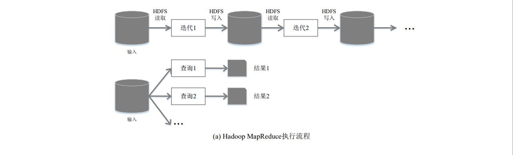
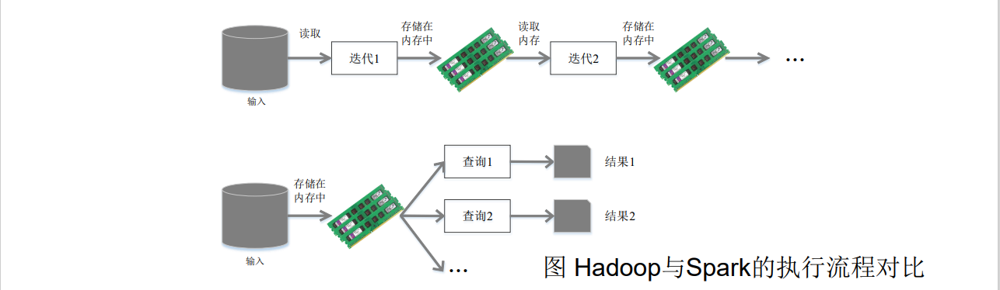
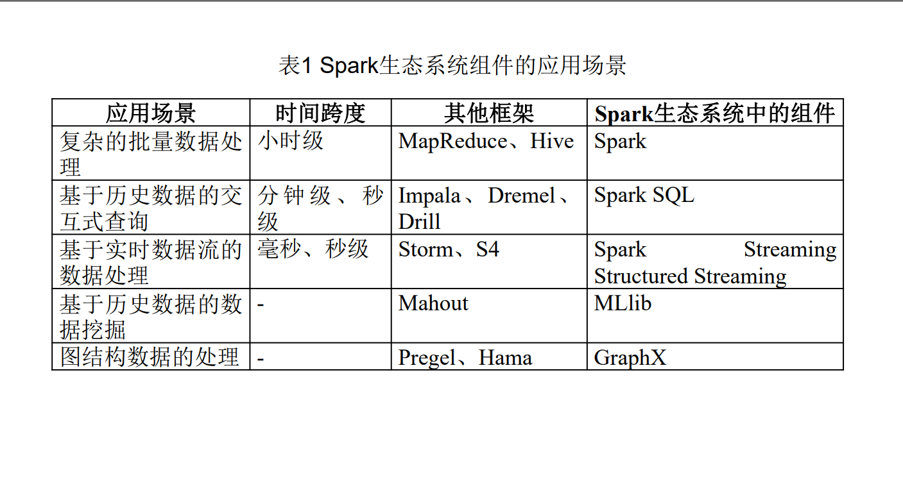
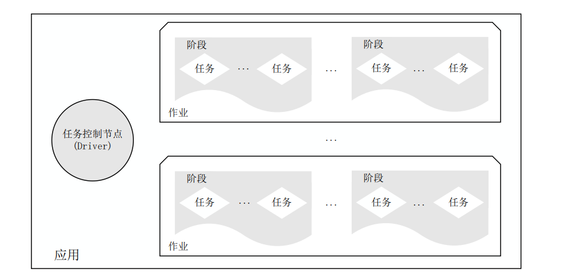
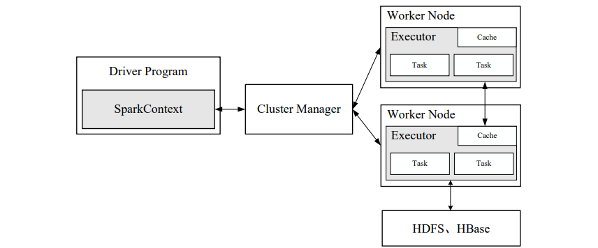
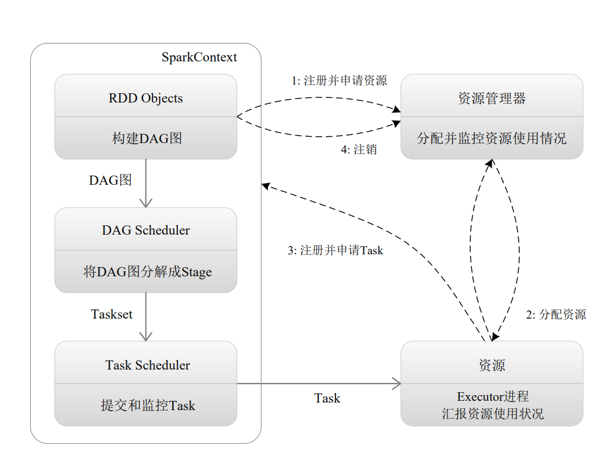
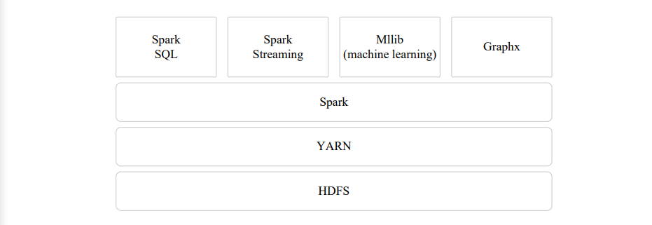

Spark
Spark的设计与运行原理
2.1 Spark概述
2.1.1 Spark简介
Spark最初由美国加州大学伯克利分校（UC Berkeley）的 AMP实验室于2009年开发，是基于内存计算的大数据并行 计算框架，可用于构建大型的、低延迟的数据分析应用程序
2013年Spark加入Apache孵化器项目后发展迅猛，如今已 成为Apache软件基金会最重要的三大分布式计算系统开源 项目之一（Hadoop、Spark、Storm）
spark具有如下几个特点
- 运行速度快：使用DAG执行引擎以支持循环数据流与内存计算
- 容易使用：支持使用Scala、Java、Python和R语言进行编程， 可以通过Spark Shell进行交互式编程
- 通用性：Spark提供了完整而强大的技术栈，包括SQL查询、流 式计算、机器学习和图算法组件
- 运行模式多样：Spark与Hadoop可运行于独立的集群模式中，可运行于Hadoop 中，也可运行于Amazon EC2等云环境中，并且可以访问HDFS 、Cassandra、HBase、Hive等多种数据源比较
2.1.2 Spark与hadoop的对比
Hadoop存在如下一些缺点：
- 表达能力有限 •
- 磁盘IO开销大
- 延迟高
- 任务之间的衔接涉及IO开销
- 在前一个任务执行完成之前，其他任务就无法 开始，难以胜任复杂、多阶段的计算任务
Spark在借鉴Hadoop MapReduce优点的同时，很好地解决了 MapReduce所面临的问题 相比于Hadoop MapReduce，Spark主要具有如下优点：
•Spark的计算模式也属于MapReduce，但不局限于Map和Reduce操作 ，还提供了多种数据集操作类型，编程模型比Hadoop MapReduce更 灵活
•Spark提供了内存计算，可将中间结果放到内存中，对于迭代运算 效率更高 Spark基于DAG的任务调度执行机制，要优于Hadoop MapReduce的 迭代执行机制


2.2 Spark生态系统
在实际应用中，大数据处理主要包括以下三个类型：
- 复杂的批量数据处理：通常时间跨度在数十分钟到数小时之间
- 基于历史数据的交互式查询：通常时间跨度在数十秒到数分钟之间
- 基于实时数据流的数据处理：通常时间跨度在数百毫秒到数秒之间
当同时存在以上三种场景时，就需要同时部署三种不同的软件 比如: MapReduce / Impala / Storm
这样做难免会带来一些问题：
- 不同场景之间输入输出数据无法做到无缝共享，通常需要进行数据格 式的转换
- 不同的软件需要不同的开发和维护团队，带来了较高的使用成本
- 比较难以对同一个集群中的各个系统进行统一的资源协调和分配
Spark的设计遵循“一个软件栈满足不同应用场景”的 理念，逐渐形成了一套完整的生态系统 •既能够提供内存计算框架，也可以支持SQL即席查询、 实时流式计算、机器学习和图计算等 •Spark可以部署在资源管理器YARN之上，提供一站式的 大数据解决方案 •因此，Spark所提供的生态系统足以应对上述三种场景， 即同时支持批处理、交互式查询和流数据处理

2.3 Spark运行架构
2.3.1 基本概念
- RDD:弹性分布式数据集（Resillient Distributed Dataset）的简称，是分布式内存的一个抽象概念，提供了一种高度受限的共享内存模型
- DAG:有向无环图（Directed Acyclic Graphy）的简称，反应RDD之间的依赖关系
- Executor：是运行在工作节点（WorkerNode）的一个进程，负责运行Task
- 应用（Application）：用户编写的Spark应用程序
- 任务（ Task ）：运行在Executor上的工作单元
- 作业（ Job ）：一个作业包含多个RDD及作用于相应RDD上的各种操作
- 阶段（ Stage ）：是作业的基本调度单位，一个作业会分为多组任务，每 组任务被称为阶段，或者也被称为任务集合，代表了一组关联的、相互之间 没有Shuffle依赖关系的任务组成的任务集
- 一个应用由一个Driver和若干个作业构成，一个作业由多个阶段构成，一 个阶段由多个没有Shuffle关系的任务组成
- 当执行一个应用时，Driver会向集群管理器申请资源，启动Executor，并 向Executor发送应用程序代码和文件，然后在Executor上执行任务，运行 结束后，执行结果会返回给Driver，或者写到HDFS或者其他数据库中

2.3.2 架构设计
- Spark运行架构包括集群资源管理器（Cluster Manager）、运行作 业任务的工作节点（Worker Node）、每个应用的任务控制节点 （Driver）和每个工作节点上负责具体任务的执行进程（Executor）
- 资源管理器可以自带或Mesos或YARN

2.3.3 Spark基本运行流程

（1）首先为应用构建起基本的 运行环境，即由Driver创建一个 SparkContext，进行资源的申请 、任务的分配和监控
（2）资源管理器为Executor分 配资源，并启动Executor进程
（3）SparkContext根据RDD的 依赖关系构建DAG图，DAG图 提交给DAGScheduler解析成 Stage，然后把一个个TaskSet提 交给底层调度器TaskScheduler 处理；Executor向SparkContext 申请Task，Task Scheduler将 Task发放给Executor运行，并提 供应用程序代码
（4）Task在Executor上运行， 把执行结果反馈给 TaskScheduler，然后反馈给 DAGScheduler，运行完毕后写 入数据并释放所有资源
2.3.4 RDD的设计与运行原理
2.4 Spark的部署方式
Spark支持三种不同类型的部署方式，包括：
- Standalone（类似于MapReduce1.0，slot为资源分配单位）
- Standalone模式被称为集群单机模式。
- 该模式下，Spark集群架构为主从模式，即一台Master节点与多 台Slave节点，Slave节点启动的进程名称为Worker，存在单点故 障的问题。
- Spark on Mesos（和Spark有血缘关系，更好支持Mesos）
- Mesos模式被称为Spark on Mesos模式。
- Mesos是一款资源调度管理系统，为Spark提供服务，由于Spark 与Mesos存在密切的关系，因此在设计Spark框架时充分考虑到 对Mesos的集成。
- Spark on YARN
- Yarn模式被称为Spark on Yarn模式，即把Spark作为一个客户端， 将作业提交给Yarn服务。
- 由于在生产环境中，很多时候都要与Hadoop使用同一个集群，因 此采用Yarn来管理资源调度，可以提高资源利用率。

2.4.1 搭建Spark开发环境
环境准备
由于Spark仅仅是一种计算框架，不负责数据的存储和管理，因此，通常都会 将Spark和Hadoop进行统一部署，由Hadoop中的HDFS、HBase等组件负责 数据的存储管理，Spark负责数据计算。
安装Spark集群前，需要安装Hadoop环境，本教材采用如下配置环境。
•Linux系统：CentOS7版本
•Hadoop：2.7.4版本
•JDK：1.8版本
•Spark：2.3.2版本
•pySpark, Python >= 3.6版本
Spark集群安装部署
- 本书将在 Standalone 模 式 下 ， 进 行 Spark集群的安装部署。
- 规划的Spark集群包含一台Master节点 和 两 台 Slave 节 点 。 其 中 ， 主机名 hadoop01是Master节点，hadoop02 和hadoop03是Slave节点
- 下载Spark安装包
[spark下载页面](Downloads | Apache Spark)
- 解压Spark安装包
首先将下载的spark-2.3.2-bin-hadoop2.7.tgz安装包上传到主节点hadoop01 的/export/software目录下，然后解压到/export/servers/目录，解压命令如下。
$ tar -zxvf spark-2.3.2-bin-hadoop2.7.tgz -C /export/servers/ |
- 修改配置文件
(1) 将spark-env.sh.template配置模板文件复制一份并命名为spark-env.sh
(2) 修改spark-env.sh文件，在该文件添加以下内容：
#配置java环境变量 |
(3) 复制slaves.template文件，并重命名为slaves
(4) 修改spark-env.sh文件，在该文件添加以下内容：通过“vi slaves”命令编 辑slaves配置文件，主要是指定Spark集群中的从节点IP，由于在hosts文件中已 经配置了IP和主机名的映射关系，因此直接使用主机名代替IP，添加内容如下。
hadoop02 |
- 分发文件
修改完成配置文件后，将spark目录分发至hadoop02和hadoop03节点
$ scp -r /export/servers/spark/ hadoop02:/export/servers/ |
- 启动Spark集群
$ sbin/start-all.sh |